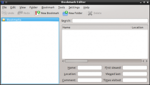
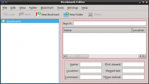
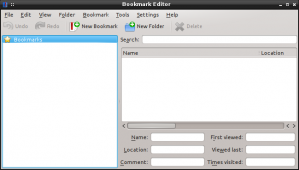
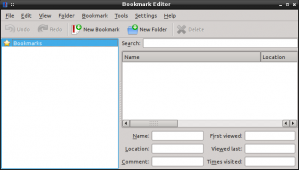
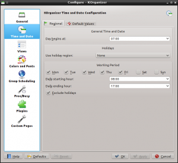
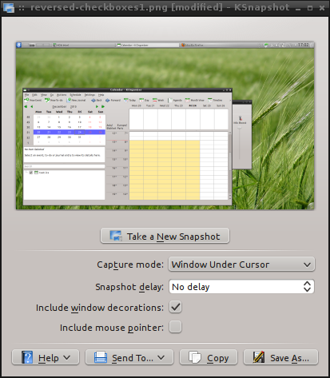
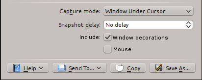

It is not uncommon to find dialogs which contains tabs, which themselves contain groups, which contain other groups. That's quite a lot of borders... Not only does it look crowded, it also eats valuable content space. There are a few easy tricks you can use to avoid this issue.
This problem seems to be less common lately, but I still encounter it regularly, especially in configuration dialogs. The bookmark editor demonstrates this problem quite well:
Oxygen tends to hide the problem a bit, it is much more visible with the the Plastique style, as you can see on this annotated screenshot:
The change is very simple to do. Here is what it looks like now:
 Note that I only removed the top and left part of the inner double margin: I first tried removing margins from all sides, but the line edits looked cramped when squashed against the window borders.
Sometimes widgets are aligned to the right border of their container, and their labels are aligned to the left border. It looks like this:
This is wrong because the eye has a lot of work to do to associate the widget with its label. For this reason, the KDE HIG suggests using right-aligned labels and left-aligned widgets in the Dialogs page.
The easiest way to get the correct layout is to use the QFormLayout (which comes with the added bonus of adjusting label alignment according to the platform, so one gets left-aligned labels when running on GNOME). QFormLayout is sometimes painful though and in this case you have to use the more generic QGridLayout. If you do this, be sure to right-align your labels.
Now... this one is probably going to be controversial, so keep in mind this is just my opinion.
From time to time we see check boxes with labels on the left. For example, reversed checkboxes appeared in KSnapshot: 
It is my understanding that this change was made so that all labels are on the left and clickable elements on the right. It certainly looks nice and balanced in KSnapshot, but the idea of reversed checkboxes is still wrong for at least two reasons:
I agree the problem reversed checkboxes tries to address is valid, though: checkboxes sometimes break the visual alignment of widgets in a dialog. However I suggest a different fix: try to figure out a label for your checkboxes. For example, KSnapshot could be changed to look like this:
The KDE HIG actually mentions this checkbox issue in Form_Label_Alignment and suggests a similar, but more generic, fix: Put the description of your checkbox in a QLabel on the left of the checkbox and set the checkbox text to a generic word like "On" or "Enabled".
{kind=link}
{kind=link}
{kind=link}
{kind=link}
{kind=link}
{kind=link}
{kind=link}
{kind=link}
{kind=link}